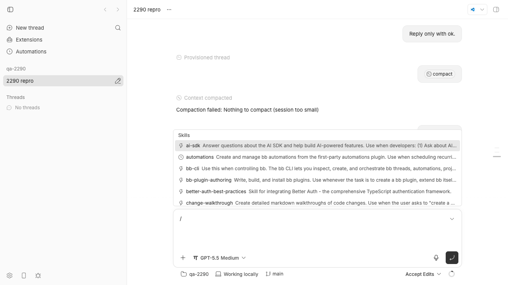
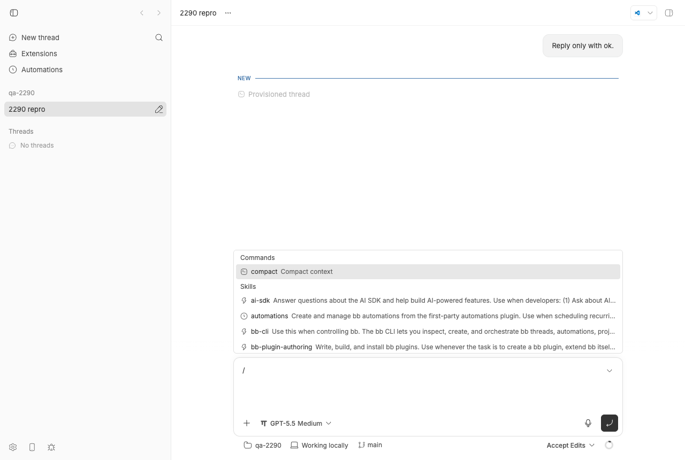
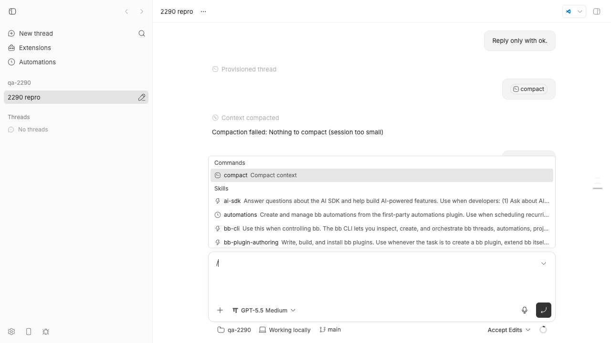

#2290 · compactThread returns 409 for acp-omp although the provider-acp bridge already implements /compact
Verdict: REPRODUCED · Root-cause confidence: high
Linked PR: #2293 — verdict REQUEST CHANGES (unmergeable as written: it edits a declaration that no longer lives in the file it patches, and it un-gates a path that reports a false "Context compacted" on omp; details in section 7).
1. TL;DR
On an idle thread whose provider is acp-omp (the omp CLI driven over ACP by the first-party provider-acp plugin), POST /api/v1/threads/:id/compact answers 409 Provider "acp-omp" does not support manual context compaction, and the composer's / menu has no compact command for omp threads. The server refuses before any provider code runs: it asks the provider registry whether acp-omp declared supportsManualCompaction, and the shipped agent table (plugins/provider-acp/src/known-agents.ts) simply omits the flag for omp while setting it for opencode. The bridge itself already handles the compaction request for any ACP agent by sending the agent's own /compact as a prompt, and omp 16.3.10 really does execute its builtin /compact from ACP prompt text. So the issue is accurate: the static declaration is stale and the fix is one property on the omp entry.
One important caveat the issue and PR both miss: when I lifted the gate and compacted a small omp session live, omp answered "Compaction failed: Nothing to compact (session too small)" but still ended the prompt with stopReason: "end_turn", so the bridge emitted thread/compacted and the UI showed a "Context compacted" banner directly above the failure text. Flipping the flag alone therefore trades a 409 for a silently wrong success signal on small sessions (the pi plugin already special-cases exactly this message; see section 5).
2. Claims vs findings
| Claim from the issue | Status | Evidence |
|---|---|---|
POST /api/v1/threads/<id>/compact on an idle acp-omp thread returns 409 Provider "acp-omp" does not support manual context compaction | Verified | Live on my dev instance (section 4, step 4) and by unit test repro-2290-acp-omp-compaction.test.ts (fails with exactly that body on base). |
The composer hides/disables the /compact affordance for omp threads | Verified | GET /projects/:id/commands?provider=acp-omp returns no builtin compact; provider=pi and provider=acp-opencode do. Screenshot 2290-omp-slash-menu-base.png shows the menu with only Skills. |
| The rejection happens in the server's capability gate before the bridge is consulted | Verified | compactThreadContext in apps/server/src/routes/threads/actions.ts#L136-L146 throws before sendThreadMessage; the unit test's host RPC responder sees zero turn.submit commands on base. |
Only the static per-agent capability declaration is wrong; acp-opencode overrides the same flag | Verified (file moved) | At base the declaration is no longer in plugins/provider-acp/server.ts (the issue's links point at fff3ae8). Since #2325 (e42a4ef48, 2026-08-23) it is plugins/provider-acp/src/known-agents.ts: opencode has supportsManualCompaction: true (L128), omp has nothing (L152-L190); src/declaration.ts#L122-L124 only sets the capability when the agent says true. |
The provider-acp bridge already implements manual compaction end-to-end by sending /compact via session/prompt | Verified | packages/provider-bridge-acp/src/bridge/bridge.ts#L2291-L2330 (startCompaction) and #L2812-L2818 (dispatch on isStandaloneBuiltinCompactCommand). Live: after the flip the POST returned 200 and the event log shows item/started contextCompaction → thread/compacted → turn/completed. |
omp executes builtin slash commands from ACP prompt text, so /compact works | Verified, with a catch | omp 16.3.10 bundle: the ACP prompt handler calls executeAcpBuiltinSlashCommand on the prompt text; compact is in ACP_BUILTIN_SLASH_COMMANDS with acpDescription: "Compact the conversation" and is advertised in available_commands_update. The catch: every consumed builtin command resolves the prompt with stopReason: "end_turn", including when omp's /compact handler printed Compaction failed: …. |
| "The bridge fails the turn legibly rather than pretending success when an agent lacks the command" / flipping the flag does not weaken per-agent honesty | Refuted for omp | Live after the flip on a 2-message session: omp emitted the agent message Compaction failed: Nothing to compact (session too small), then the bridge emitted thread/compacted and the timeline rendered "Context compacted". Screenshot 2290-omp-thread-after-compact-fixed.png; events in events-after-compact.json. |
The same call succeeds on acp-opencode, codex, pi, claude-code | Verified at the gate level | registry.supportsManualCompaction("acp-opencode") is true in the unit test; the existing public-thread-compaction.test.ts covers pi returning 200. I did not run live opencode/codex/claude turns. |
Production evidence (issue comment): a queued /compact on a busy acp-omp thread (OMP 17.4.1) completed with thread/compacted | Unverified | I cannot see thread thr_4tm7g4ie78. It is consistent with the code path, but note that per the finding above a thread/compacted event from omp does not by itself prove the context shrank. |
| Not a duplicate of #1103 / #1152; #1152 excluded ACP providers deliberately | Verified | #1152 (merged 2026-08-11) added manual compaction for codex/claude-code/pi; ACP's /compact maintenance prompt and the opencode override came later (#1640, #1879). The ACP tier default remains false in src/declaration.ts#L24. |
{kind=link}
{kind=link}
3. Environment
- bb at base
494f66526913557ab076e048218236f0a6610927(origin/main up to21cb6b68bcontains no change toplugins/provider-acpor the compaction route: not already fixed). - macOS 26.5.2 (arm64), Node v22.23.1, pnpm, turbo 2.8.3.
- omp 16.3.10 (
@oh-my-pi/pi-coding-agent,~/.bun/bin/omp), signed in; the issue reports OMP 17.4.1 nightly. opencode 1.18.10, cursor-agent, grok, hermes also on PATH (so all ACP agents were listed by the dev instance). - Dev instance from my worktree: App
http://localhost:13279, Serverhttp://localhost:21279, Host daemonhttp://127.0.0.1:29279, data dir~/.bb-dev/bb-machines-HOST.getbb.app-checkouts-bb-.claude-worktrees-wf_846839f8-f8a-57-f12a8f674d16(deleted at cleanup). Scratch project repo/tmp/bb-2290-qa, projectproj_nz8rp57u3c, threadthr_5krwcmy3pc.
4. Minimal reproduction
A. Unit test (no omp needed, 3 seconds)
Save repro-2290-acp-omp-compaction.test.ts as apps/server/test/public/repro-2290-acp-omp-compaction.test.ts and run it from apps/server. The test harness registers the real first-party provider plugins, seeds an idle acp-omp thread with a fake host session, and POSTs the compact route.
cd apps/server && pnpm exec vitest run test/public/repro-2290-acp-omp-compaction.test.ts
expected: 200 and one turn.submit carrying createStandaloneBuiltinCompactCommandInput()
actual (base 494f66526):
FAIL test/public/repro-2290-acp-omp-compaction.test.ts > #2290 manual compaction on acp-omp > POST /threads/:id/compact on an idle acp-omp thread dispatches the /compact turn (expected 200)
AssertionError: {"code":"invalid_request","message":"Provider \"acp-omp\" does not support manual context compaction"}: expected 409 to be 200
✓ documents the current gate: registry answers false for acp-omp, true for acp-opencode
With the one-line fix from section 6 applied the first case passes and the second (which asserts the current broken value) flips, as expected (tests-ported.txt).
/**
* Repro for get-bb/bb#2290: POST /api/v1/threads/:id/compact on an idle
* `acp-omp` thread answers 409 "does not support manual context compaction"
* even though the provider-acp bridge implements /compact for every ACP
* agent. The gate is the static capability declaration in
* plugins/provider-acp/src/known-agents.ts (acp-omp omits
* `supportsManualCompaction: true`; acp-opencode sets it).
*/
import { describe, expect, it } from "vitest";
import { createStandaloneBuiltinCompactCommandInput } from "@bb/domain";
import { registerHostRpcResponder, type HostRpcHandlerResult } from "../helpers/host-rpc.js";
import { readJson } from "../helpers/json.js";
import { seedEnvironment, seedHostSession, seedProjectWithSource, seedThread, seedThreadRuntimeState } from "../helpers/seed.js";
import { withTestHarness, type TestAppHarness } from "../helpers/test-app.js";
function seedIdleThread(harness: TestAppHarness, providerId: string) {
const { host, session } = seedHostSession(harness.deps);
const { project } = seedProjectWithSource(harness.deps, { hostId: host.id });
const environment = seedEnvironment(harness.deps, { hostId: host.id, projectId: project.id });
const thread = seedThread(harness.deps, { environmentId: environment.id, projectId: project.id, providerId, status: "idle" });
seedThreadRuntimeState(harness.deps, { environmentId: environment.id, providerThreadId: `provider-thread-${providerId}`, threadId: thread.id });
const responder = registerHostRpcResponder(harness, {
hostId: host.id, sessionId: session.id,
handle: ({ command }): HostRpcHandlerResult => {
if (command.type === "host.list_files") return { ok: true, result: { files: [], truncated: false } };
if (command.type === "host.read_file") return { ok: false, errorCode: "ENOENT", errorMessage: `Path does not exist: ${command.path}` };
return { ok: true, result: { appliedAs: "new-turn" } };
},
});
return { thread, responder };
}
describe("#2290 manual compaction on acp-omp", () => {
it("POST /threads/:id/compact on an idle acp-omp thread dispatches the /compact turn (expected 200)", async () => {
await withTestHarness(async (harness) => {
const { thread, responder } = seedIdleThread(harness, "acp-omp");
const response = await harness.app.request(`/api/v1/threads/${thread.id}/compact`, { method: "POST" });
const body = await readJson(response.clone());
expect(response.status, JSON.stringify(body)).toBe(200); // <-- 409 on base
const turnSubmits = responder.requests.filter(({ command }) => command.type === "turn.submit");
expect(turnSubmits).toHaveLength(1);
expect(turnSubmits[0]?.command).toMatchObject({
type: "turn.submit", threadId: thread.id,
input: createStandaloneBuiltinCompactCommandInput(),
resumeContext: { providerId: "acp-omp" },
});
});
});
it("documents the current gate: registry answers false for acp-omp, true for acp-opencode", async () => {
await withTestHarness(async (harness) => {
const registry = harness.deps.providerRegistry;
expect(registry.get("acp-omp")).not.toBeNull();
expect(registry.supportsManualCompaction("acp-opencode")).toBe(true);
expect(registry.supportsManualCompaction("acp-omp")).toBe(false);
});
});
});
B. Live, against a running bb with omp installed
- Start a dev instance from the checkout and load its environment (scripts in
2290/repro/do every step below):scripts/bb-dev-app current # prints App/Server/Host daemon URLs + data dir eval "$(scripts/bb-dev-app env)" # BB_SERVER_URL=http://localhost:21279 for my run
- Confirm omp is listed as a provider (it is only listed when the
ompbinary is on PATH) and create a project on a scratch git repo (03-create-project.sh):curl -s $BB_SERVER_URL/api/v1/system/providers | jq -r '.[].id' codex claude-code pi acp-cursor acp-opencode acp-omp acp-grok acp-hermes-agent HOST_ID=$(curl -s $BB_SERVER_URL/api/v1/hosts | jq -r '.[0].id') curl -s -X POST $BB_SERVER_URL/api/v1/projects -H 'content-type: application/json' \ -d "{\"name\":\"qa-2290\",\"source\":{\"type\":\"local_path\",\"path\":\"/tmp/bb-2290-qa\",\"hostId\":\"$HOST_ID\"}}" {"id":"proj_nz8rp57u3c", ...} - Spawn one omp thread with a tiny prompt and wait until it is idle (
04-spawn-and-compact.sh; the omp turn took ~80 s here):pnpm bb:dev thread spawn --project proj_nz8rp57u3c --provider acp-omp --permission-mode accept-edits --title "2290 repro" --prompt "Reply only with ok." --json { "id": "thr_5krwcmy3pc", "providerId": "acp-omp", ... } curl -s $BB_SERVER_URL/api/v1/threads/thr_5krwcmy3pc | jq '{providerId,status}' {"providerId": "acp-omp", "status": "idle"} - Ask for manual compaction:
curl -s -i -X POST $BB_SERVER_URL/api/v1/threads/thr_5krwcmy3pc/compact expected: HTTP/1.1 200 OK {"ok":true} followed by a contextCompaction turn on the thread actual: HTTP/1.1 409 Conflict {"code":"invalid_request","message":"Provider \"acp-omp\" does not support manual context compaction"} - The same gate hides the composer command. The command list the composer fetches has no builtin
compactfor omp but does for pi and opencode:curl -s "$BB_SERVER_URL/api/v1/projects/proj_nz8rp57u3c/commands?provider=acp-omp" | jq '[.commands[]|select(.name=="compact")|.name]' → [] curl -s "$BB_SERVER_URL/api/v1/projects/proj_nz8rp57u3c/commands?provider=pi" | jq '...' → ["compact"] curl -s "$BB_SERVER_URL/api/v1/projects/proj_nz8rp57u3c/commands?provider=acp-opencode" | jq '...' → ["compact"]

/ typed in the composer: the menu opens straight at Skills; there is no Commands → compact row. (The "Context compacted" banner visible in the timeline is from the experiment in section 5, run before this capture on the same thread.)
supportsManualCompaction: true to the omp entry (dev server hot-reloaded the plugin): a Commands → compact · Compact context row appears above Skills.Repro files: 2290/repro/ · raw outputs: 04-spawn-and-compact.txt, repro-test-base.txt.
5. Root cause
Mechanism. The compact route is a pure policy gate on a static capability:
// apps/server/src/routes/threads/actions.ts#L136-L146
async function compactThreadContext(deps: AppDeps, thread: Thread): Promise<void> {
ensureThreadIsWritable(thread);
if (!deps.providerRegistry.supportsManualCompaction(thread.providerId)) {
throw new ApiError(409, "invalid_request",
`Provider "${thread.providerId}" does not support manual context compaction`);
}
...
await sendThreadMessage(deps, { ..., payload: { input: createStandaloneBuiltinCompactCommandInput(), mode: "start" } });
}
actions.ts#L136-L146. The registry answers from the plugin registration's serverCapabilities (provider-registry.ts#L416-L422), which is copied verbatim from the declared capabilities at registration (plugin-provider-registration.ts#L254). The same accessor decides whether the composer's command list includes the builtin /compact (projects.ts#L748-L750, includeBuiltinCompact), which is why the affordance disappears too.
Since #2325 the ACP plugin builds each declaration from an agent definition. The tier default is false and the builder only upgrades it when the agent definition says true:
// plugins/provider-acp/src/declaration.ts#L21-L30 and #L117-L126
const ACP_BASE_CAPABILITIES: PluginProviderCapabilities = { ..., supportsManualCompaction: false, ... };
...
capabilities: {
...ACP_BASE_CAPABILITIES,
fork: agent.fork ?? DEFAULT_FORK,
permissionModes: [...ACP_BASE_CAPABILITIES.permissionModes],
...(agent.supportsManualCompaction === true ? { supportsManualCompaction: true } : {}),
...
declaration.ts#L117-L126. In the shipped table, opencode sets the flag and omp does not:
// plugins/provider-acp/src/known-agents.ts
{ id: "acp-opencode", ..., visibility: "installed", supportsManualCompaction: true, fork: "tip", ... }, // L120-L151
{ id: "acp-omp", ..., visibility: "installed", /* no supportsManualCompaction */ fork: "tip", ... }, // L152-L190
known-agents.ts#L120-L190. Nothing downstream distinguishes omp from opencode: the bridge dispatches the standalone builtin /compact mention to startCompaction for every agent (bridge.ts#L2812-L2818), which sends session/prompt with text /compact (bridge.ts#L2291-L2330). The declaration is the only thing that says no. The issue's source links (to server.ts and ACP_BASE_CAPABILITIES at fff3ae8) describe the same defect in its pre-#2325 location.
Is the declaration actually wrong for omp? Yes. In the omp 16.3.10 bundle the ACP prompt handler first tries executeAcpBuiltinSlashCommand(text); the compact command has an ACP handle (calls session.compact(...), then prints Compaction complete. Tokens: A -> B) and an acpDescription, and omp lists it in available_commands_update. Live, with the flag flipped, the POST returned 200 and omp ran the command (section 5b).
5b. Deeper issue: omp's failed compaction is reported as thread/compacted
end_turn prompt counts as compacted" (bridge.ts#L2312-L2325; the translator emits context.compacted only for status: "completed", delta-translation.ts#L963-L979). omp does not honor that contract: its ACP agent resolves every consumed builtin slash command with stopReason: "end_turn", and its /compact handler reports failure as an agent message (m1("Compaction failed: …") → {consumed: true}), not as a prompt error.Observed live after applying the one-line fix, on the 2-message omp thread from section 4 (05-compact-with-fix.txt, events-after-compact.json):
POST /api/v1/threads/thr_5krwcmy3pc/compact → HTTP/1.1 200 OK {"ok":true}
client/turn/requested source=tell input=[/compact builtin mention]
turn/started
item/started {"type":"contextCompaction", label {pending:"Compacting context", completed:"Compacted context"}}
turn/input/accepted
item/started {"type":"agentMessage","id":"dac1263510-i2"}
item/agentMessage/delta "Compaction failed: Nothing to compact (session too small)"
item/completed agentMessage "Compaction failed: Nothing to compact (session too small)"
thread/compacted ← false: nothing was compacted
turn/completed {"status":"completed"}

/compact request, then a Context compacted lifecycle banner, immediately followed by omp's own Compaction failed: Nothing to compact (session too small). A second attempt produced the identical sequence.The pi plugin hit the same provider message in #1721 and now classifies "Compaction failed: Nothing to compact (session too small)" and "Compaction failed: Already compacted" as a no-op: it emits a provider.warning (category: "compaction-skipped") and a completed turn boundary with no context.compacted (provider-pi/src/delta-translation.ts#L183-L196, #L736-L753). omp is a pi fork and prints the identical strings, so the ACP bridge needs the equivalent before thread/compacted from omp can be trusted (it affects the timeline banner and anything keyed on thread/compacted, e.g. the fork-history cut list in thread-fork-history.ts#L240 and auto-compaction plugins deciding the thread is now small).
6. Proposed fix (first principles)
- Flip the declaration where it lives now (this is all #2293 intends; ported diff in
ported-fix.diff):--- a/plugins/provider-acp/src/known-agents.ts +++ b/plugins/provider-acp/src/known-agents.ts @@ -157,6 +157,11 @@ export const KNOWN_ACP_AGENTS signInCommand: "omp login", installUrl: "https://github.com/can1357/omp", visibility: "installed", + // omp runs its builtin `/compact` from ACP prompt text + // (executeAcpBuiltinSlashCommand) and advertises it in + // available_commands_update, so the bridge's /compact maintenance turn + // works (#2290). + supportsManualCompaction: true, // Unverified; the ACP tier's value (see acp-opencode). fork: "tip",Update the expectation table inapps/server/test/services/plugins/first-party-provider-plugins.test.ts(acp-omp → supportsManualCompaction: true) and add the acp-omp 200-path case toapps/server/test/public/public-thread-compaction.test.ts. No wire shape changes (the flag already exists in the declaration schema andSystemProviderInfodoes not carry it), so noHOST_DAEMON_PROTOCOL_VERSIONbump is needed. Verified: with this diff the PR's two test files and my repro pass (tests-ported.txt), typecheck ofbb-plugin-provider-acpis green, and the live POST returns 200. - Make the bridge honest about omp's no-op/failed compaction (same change or an immediate follow-up, otherwise step 1 ships a false "Context compacted"). In
startCompaction(packages/provider-bridge-acp/src/bridge/bridge.ts), whilesession.activePromptKind === "compaction", watch the agent message text the agent streams during the maintenance prompt; if the completed text starts withCompaction failed:, finish with{ status: "failed", error: text }— or, mirroring pi, treat the two known no-op strings ("Nothing to compact (session too small)", "Already compacted") as a skipped compaction: completed turn boundary plus aprovider.warningwithcategory: "compaction-skipped", and nocontext.compacted. Cover it inbridge.test.tswith the fake ACP agent answering/compactwith that agent message andend_turn. Risk: string matching on a vendor message; pi already accepts that risk for the same strings, and the fallback (reporting success) is worse than a missed match.
7. PR review — #2293 "fix(provider-acp): declare manual compaction support for omp"
What it changes. Branch fix/acp-compaction-409, one commit e1e0599bd on merge base fff3ae8: adds supportsManualCompaction: true to the acp-omp entry of ACP_PROVIDERS in plugins/provider-acp/server.ts; flips the acp-omp row in the first-party capability table test; adds a public-route test asserting 200 plus one turn.submit with the builtin compact input for an acp-omp thread; reformats two unrelated statements in the same test file.
Does it address the root cause? Conceptually yes: the only defect is the declaration and the PR flips it, matching the opencode precedent. Mechanically no longer: GitHub reports the PR CONFLICTING, and it is not a trivial textual conflict.
Findings
| # | Severity | Where | Finding |
|---|---|---|---|
| 1 | blocking | plugins/provider-acp/server.ts (PR hunk at L134-L140) | #2325 (e42a4ef48, merged the day after this PR was opened) deleted ACP_PROVIDERS and ACP_BASE_CAPABILITIES from server.ts; the agent facts now live in src/known-agents.ts and the capability builder in src/declaration.ts. git merge-tree 494f66526 pr-2293 → CONFLICT (content): Merge conflict in plugins/provider-acp/server.ts (conflict diff, 700 lines). A naive "take theirs" would resurrect the old file. The change must be re-expressed as one property on the omp entry in known-agents.ts (section 6, step 1). |
| 2 | major | packages/provider-bridge-acp/src/bridge/bridge.ts#L2312-L2325, PR description "fails the turn legibly rather than pretending success" | The PR un-gates a path whose success signal is not trustworthy for omp. omp resolves every consumed builtin slash command with end_turn, including a /compact that printed Compaction failed: Nothing to compact (session too small); the bridge then emits thread/compacted and the UI shows "Context compacted" (section 5b, reproduced twice live). Flipping the flag converts a loud 409 into a silent false positive for every small omp session — exactly the class of bug #1721 fixed for pi. Either add the no-op/failure detection in the same PR or state the limitation and file the follow-up before merging; the PR description currently claims the opposite. |
| 3 | minor | apps/server/test/public/public-thread-compaction.test.ts new case | The test asserts the server dispatches a turn.submit with the compact input and resumeContext.providerId "acp-omp". That is a faithful regression test for the gate (it fails on base with the 409) but it proves nothing about the bridge or omp; the description's claim that it "exercises the same path production exercises" overstates it. Fine to keep, but the bridge-side behavior for omp (finding 2) has no test at all. |
| 4 | minor | same test file, hunks at L1-L5 and L277-L287 | Unrelated reformatting of an import and an expect.poll chain (oxfmt output on a stale base). Harmless but adds conflict surface; drop when rebasing. |
| 5 | ok | protocol / layering | No wire, daemon, or CLI surface changes; the flag is consumed only inside the server, so no HOST_DAEMON_PROTOCOL_VERSION bump is required. Server/daemon boundary is respected (policy stays in the declaration + server gate). |
| 6 | ok | "How you verified" | Claims of fail-before/pass-after were made at fff3ae8. I re-ran the equivalent at base by cherry-picking the PR, resolving the conflict to base's server.ts and adding the property in known-agents.ts: the PR's two test files and my repro pass (8/9, the 9th being my intentionally inverted "documents the gate" case), turbo typecheck --filter=bb-plugin-provider-acp green. |
Tests run: pnpm exec vitest run test/public/repro-2290-acp-omp-compaction.test.ts test/public/public-thread-compaction.test.ts test/services/plugins/first-party-provider-plugins.test.ts on branch pr-2293-ported (log); pnpm exec turbo run typecheck --filter=bb-plugin-provider-acp; live compaction on a real omp thread with the ported change (section 5b).
Verdict: REQUEST CHANGES. Rebase onto main and move the one property to plugins/provider-acp/src/known-agents.ts (finding 1); address or explicitly scope out the false thread/compacted on omp's "Nothing to compact"/"Already compacted" replies and correct the description (finding 2). With those two done it is a safe, small merge.
8. Related issues
- #1721 (closed) — pi
/compacton a small session surfaced as a failed turn; fixed by classifying the same "Nothing to compact (session too small)" / "Already compacted" messages as a skipped compaction. The ACP/omp path needs the same treatment, in the opposite direction (it currently reports success). - #1152 (merged) — added manual compaction for codex/claude-code/pi and deliberately left ACP providers at
false; the ACP maintenance-prompt flow came with #1640/#1879, which is when opencode got its override. - #1103 (closed) — original request for manual compaction on pi.
- #2325 — the provider-plugin refactor that moved the ACP agent declarations to
src/known-agents.tsand made #2293 conflict. - #2122 (open) — provider-acp drops agent-initiated session updates from OMP; same bridge/agent pair.
- #2160 (open) — pi model change only takes effect after
/compact; another consumer of the manual-compaction lever.
9. Appendix
Artifacts
2290/repro/—dev-env.sh,01-list-providers.sh,03-create-project.sh,04-spawn-and-compact.sh(base 409),05-compact-with-fix.sh(200 + false compacted),06-second-turn-and-compact.sh,07-recapture-base.sh, doobie screenshot scripts,repro-2290-acp-omp-compaction.test.ts,ported-fix.diff.- Outputs:
03-create-project.txt,04-spawn-and-compact.txt,05-compact-with-fix.txt,06-second-turn-and-compact.txt,07-recapture-base.txt,repro-test-base.txt,tests-ported.txt,events-after-compact.json,events-after-compact-2.json,pr-2293-conflict.diff,issue.json. - Screenshots: thread idle (base), slash menu (base), slash menu (fixed), thread idle (fixed), timeline after compaction (fixed).
{kind=link}
{kind=link}
{kind=link}
Note on the experiment order
The dev server hot-reloads the provider-acp plugin on source change ("plugin provider-acp: 1 file changed · rebuilt host in 1282ms · reloaded provider-acp" in dev.log), so the "fixed" captures were taken while the one-line change was in the worktree and the "base" captures after reverting it (07-recapture-base.sh confirms the command list is empty and the POST is 409 again before the screenshot). Step 06's second thread tell did not produce a new provider turn (no events were appended before the second compaction), so both compaction attempts ran against the same 2-message session; the production comment on the issue reports a successful compaction on a 73k-token session, which I did not reproduce.
omp 16.3.10 ACP internals consulted (minified bundle @oh-my-pi/pi-coding-agent/dist/cli.js)
// ACP prompt handler: builtin slash commands run before the model sees the text
async#h(f,W,Y){ if(await this.#v(f,W))return; let Z=await mH0(W,{session:f.session,...});
if(Z!==!1){ if("prompt"in Z){await f.session.prompt(Z.prompt,{images:Y});return}
this.#C(f,{stopReason:"end_turn", usage:...}); return } // <-- end_turn for any consumed command
... await f.session.prompt(W,{images:Y}) ... }
// executeAcpBuiltinSlashCommand
async function mH0(f,W){let Y=$S0(f); if(!Y)return!1; let q=lg1(Y.name); if(!q?.handle)return!1;
let Z=await q.handle(Y,W); if(Z===void 0)return{consumed:!0}; return Z}
// /compact ACP handle
{name:"compact", acpDescription:"Compact the conversation", handle:async(f,W)=>{ ...
try{await W.session.compact(Y.instructions, ...)}catch(w){return m1(`Compaction failed: ${W6(w)}`,W)} // m1 = output + {consumed:true}
... await W.output(`Compaction complete. Tokens: ${Z} -> ${J} (saved ${w}).`); return D1() }}
// session.compact(): throw Error("Nothing to compact (session too small)") / Error("Already compacted")
Commands run (abridged)
gh issue view 2290 --comments; gh pr view 2293; gh pr diff 2293 pnpm install --frozen-lockfile --prefer-offline; pnpm exec turbo run build git fetch origin main; git log 494f66526..origin/main --oneline -- plugins/provider-acp apps/server/src # empty scripts/bb-dev-app current; eval "$(scripts/bb-dev-app env)" bash 2290/repro/01-list-providers.sh; bash 03-create-project.sh; bash 04-spawn-and-compact.sh cd apps/server && pnpm exec vitest run test/public/repro-2290-acp-omp-compaction.test.ts # 409 on base git fetch origin pull/2293/head:pr-2293; git merge-tree --write-tree 494f66526 pr-2293 # CONFLICT server.ts git checkout -b pr-2293-ported 494f66526; git cherry-pick pr-2293; git checkout 494f66526 -- plugins/provider-acp/server.ts (edit plugins/provider-acp/src/known-agents.ts: supportsManualCompaction: true on acp-omp); git commit pnpm exec turbo run build --filter=bb-plugin-provider-acp; pnpm exec vitest run <3 test files>; pnpm exec turbo run typecheck --filter=bb-plugin-provider-acp bash 05-compact-with-fix.sh; bash 06-second-turn-and-compact.sh; doobie --headless < doobie-after-compact.js git checkout 494f66526 -- plugins/provider-acp/src/known-agents.ts; bash 07-recapture-base.sh pnpm dev:stop; rm -rf <data dir> /tmp/bb-2290-qa